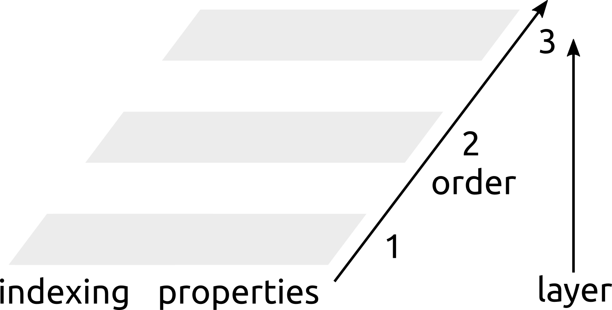

Goals & Design¶
Rascal is built as an efficient C++ core, that can be easily accessed from Python. Coding philosophy and style conventions are discussed in the Developer’s guide dev_
Here we discuss the general structure of the code, the main objects that are used, and the rationale for various design choices.
Structures and Clusters¶
An atomic structure is a collection of atoms, with properties associated to it. In the most abstract way possible, properties can be attached to the entire structure, to atoms, or to groups of atoms (pairs, triplets, …) which we refer to as “clusters”. For instance, the energy is a property associated to an entire molecule or crystal structure, the nuclear chemical shift is a property associated to atoms, a distance is a property of a pair of atoms, and so on. We refer to the number of atoms involved in a cluster as the order of that cluster. An atom is a cluster with Order=1, a pair is a cluster with Order=2 and so on.
Structure Managers¶
StructureManager is the main class forming the backbone of Rascal.
It takes care of:
Holding information about an atomic structure
Building clusters based on existing structural information
Filtering, sorting or modifying existing clusters
Computing properties of clusters (e.g. distances, angles, …)
Providing iterators that can be used to loop over clusters of a given type, and to access properties associated with clusters of each body order.

In practice the StructureManager allocates the memory to store
property data, which can be accessed as a heterogeneous map containing
different types of properties. It also provides an interface to access
clusters in terms of iterators: the internal implementation of the
neighbor list is left to the implementation, and it only should allow
to retrieve ClusterRef objects, that act as a light pointer to the
sequential list of clusters, and contains the indices of the atoms involved
in the cluster.
ClusterRef objects can be in turn iterated on, giving access to a
concise notation to iterate over atoms, pairs, triplets, …
This is best explained with a code snippet
StructureManager SM(structure_data); // assume this can compute pairs and distances
SM.update(); // refreshes the list of pairs
energy = SM.get_real(0, "energy") // structure-global property access
//access to atomic positions, explicit typing
pos = SM.get_3vec(1, "positions");
// pos = SM.get("positions"); // implicit (slower)
dist = SM.get_real(2, "distances");
for (auto atom: SM) {
// iterates over order-1 clusters (atoms)
ri = pos[atom] //accesses the position of an iterated atom
for (auto pair: atom.pairs()) {
// iterates over order-2 clusters (pairs)
dij = dist[pair] // accesses the distance between the two atoms
rj = pos[pair] // the cluster can be used to access properties of
// the last member of the cluster
}
}
Adaptors¶
AdaptorX are classes, which by stacking on top of a StructureManager
or another Adaptor change the iteration of the underlying
StructureManager, where X refers to its functionality. There are
e.g. possibilities to increase the order, enforce strictness of a neighbourhood,
build triplets and filter by species, etc. X are:
AdaptorNeighbourListbuilds a full neighbour list with the box algorithm.AdaptorStrictreduces an existing one, which is not strict with respect to the given cutoff to a strict one.AdaptorHalfListmakes a minimal neighbour list from an existing full neighbour list (each pair exists only once, no permutation of indices).AdaptorFullListtakes a minimal neighbour list and creates a full one (e.g. each pair exists twice, just permuted).AdaptorIncreaseMaxOrderincreases an the Order of an existing neighbour list (minimum is a pair list). E.g. adds the possibility of iterating over triplets, given a pair list.
From the user side each Adaptor is usable like a StructureManager. This
is because it is stacked upon an existing Manager, does not duplicate data,
creates only data and data structures, that are necessary for its intended use
and transparently hands requests for data through to the underlying
manager. Because of this transparency and the way they are used and accessed,
adaptors are from now on referred to as structure managers. The stacking is explained in the next section.
Stacking of StructureManagers¶
Structure managers can be build in a modular fashion by stacking them on top of each other. That is, one can add functionalities to an existing manager by creating an adapter, which is just a structure manager that is built based on a lower-level manager. Each manager after the first (which can e.g. be built based on a input structure, or fetching data from a host code such as LAMMPS) takes the status of an existing manager and “adapts” it by computing properties, creating clusters of higher order, or filtering existing clusters.
Conceptually this can be understood as if the state of a manager was described by a series of layers, one for each cluster order, starting from an empty slate in which no data exists. Each layer knows how to reference clusters at a given level, and can possibly contain new properties that are defined for each cluster it can index.
Consider for instance the following stack:
1. A structure is read from file, and contains only the list of atoms. Each item in the index list corresponds to an atom, and can be used to index associated properties, e.g. the position of each atom
2. Pair clusters are computed with a linked-cell algorithm [AllenTildesley]. The parameters of the manager determines how the pairs are constructed, and no distance is actually computed and stored

3. Distances are computed for a subset of the pairs, e.g. only for pairs within a strict cutoff of 3Å. Only a subset of the pairs computed at the previous layer is indexed. We will discuss later how one can index multiple layers without runtime overhead.

4. Only oxygen atoms, and pairs involving oxygen atoms are selected. Note that this adds a new layer to both atoms and pairs.

5. Triplets of oxygen atoms are constructed, and angles computed between them. A new layer is created for triplets and properties are simultaneously stored

{kind=link}
{kind=link}
It is important to keep in mind that this architecture is not associated with a
separate control structure in the code, but is realized at compile time by
template algebra based on the StructureManager class. Structure managers
provide storage space for most of the data (both properties and indices) and
infrastructure to access this data with minimal memory duplication and
computational overhead.
ClusterRefs, Property and indexing¶
The actual infrastructure to index and access cluster data is created at compile time and linked statically, so despite the apparent complexity there is little to no associated overhead.

Compile-time lookup of the appropriate property is achieved by means
of the ClusterRef object, that holds a list of the location in memory of
each cluster at a given layer in the hierarchy. A ClusterRef object is
an iterate, and an index that can be used to access properties. It can also
be used as a container to return an iterator to clusters of higher order, as
shown in the code snippets above.
Note that, once clusters of a given order have been created, Managers and
Adaptors can only select or reshuffle them, and not create new ones.
As a consequence, it is always possible to refer to deeper layers from
higher ones. A StructureManager object that introduces a new layer and
modifies clusters will create a cluster index array that specifies how each
of the clusters that is present at that layer is mapped onto deeper layers.
This means that higher layers can always access properties that have been
computed at a deeper level without the need for recomputing or duplicating
the data.
TODO: discussion of Properties, how they are indexed and how they can store metadata.
RepManager¶
A RepManager object has the purpose of computing properties of
clusters, such as distances, angles, or more complex features such as
symmetry functions or SphericalInvariants power spectrum components, and to store them in
the Properties associated with the structure.
It needs to be initialized with a StructureManager and
a JSON formatted string that contains its hyperparameters.
This string will also be attached to the metadata of the returned
properties.
Structure Managers, RepManager and Python¶
NOTE: this is more of a summary of a discussion we had about using this from Python and what this entails in terms of the template definitions.
Let’s say you wanted to be able to write code like this
import rascal as ras
sm = ras.load_structure("structure.xyz")
sm = ras.compute_pairs(sm)
sm = ras.adaptor_strict(sm, 3.0)
rep = ras.SphericalInvariants(sm, hypers)
sm = rep.compute()
The way we understand it, this would make it impossible to have statically typed structure managers, as we don’t know how many stacks a user might plug in before calling the representation builder.
So the idea we have to deal with this is that we should define a StructureManagerFull object that would be the only structure manager object available from Python. This should be general enough that every representation can function with it without stacking anything on top, and have enough flexibility to reuse between different representations (within reason).
So a typical representation constructor would have a mode of functioning based on StructureManagerFull, that could go like
RepManagerSphericalInvariants<StructureManagerFull> (StructureManagerFull& SM, hypers) {
this->sm = SM;
this->sm.initialize_pars_based_on_hypers(hypers);
this->sm.update();
}
and a generic constructor that would use template algebra to make sure that whatever SM that is passed as a constructor has the functionality that is needed to compute the representation.